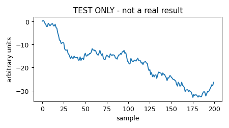

TEST NOTE, to be removed: does the student-notes pipeline publish?
S999 · Author(s): Pipeline test (not a student) · 2026-10-07 · Status: In progress
Code repository
Data and setup
This is not a real note. It contains no analysis. It
exists only to check that a pull request, the review step, the build and
the live page all work.
Results

Caption: a random walk, for testing only.
There is nothing to find in it.
Caveats
- This note will be deleted after the test.
- Do not cite it.